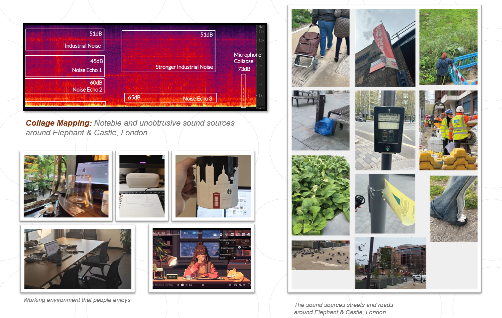

Sound Mapping
DESIGN RESEARCH METHODS / 2024
I practiced 'Mental Mapping' research by recorded different sounds from a scene and resolved them into sound source data. The design process included recording sound data with microphones, restoring the subjective experience of the target environment with a perception map, analyzing the audio components with Adobe Audition, depicting the objects the data refers to with TouchDesigner, and visually communicating them with Adobe Illustrator.

By comparing and relating it to one's description of the experience, I was able to better understand the weight of audio elements that might potentially be , immersive, overlooked or unusual. And furtherly I recorded one's cognitive memory of the environment throughout their journey, revealing unspoken subconscious elements. Such method helps designers to gain a deeper understanding of user behaviors and experiences and to explore their psychological dynamics.
As shown in the figure, after depicting the sound source data (from left to right: interview, construction site, walking, pigeon flock), its perceptual characteristics are clearly visible. And in another outcome of this research, I reconstructs the sound source data with symbolic visual languages to restore the sonic environment in a way that is easy to express and communicate. On top of that, the subjective experiences of a same objective environment from 3 different personality types are distinguished based on the data of a 5-Point Likert Scale.